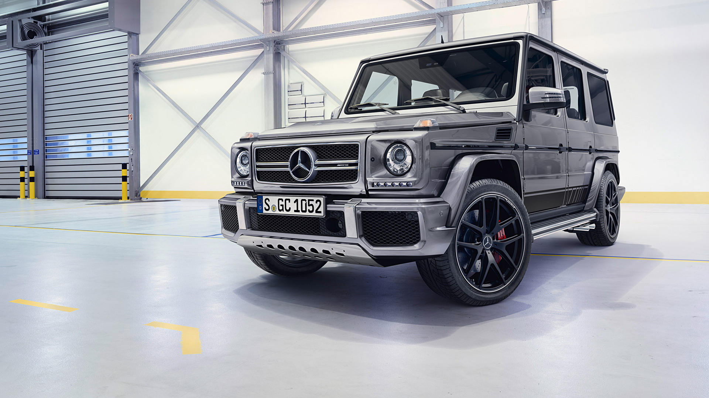
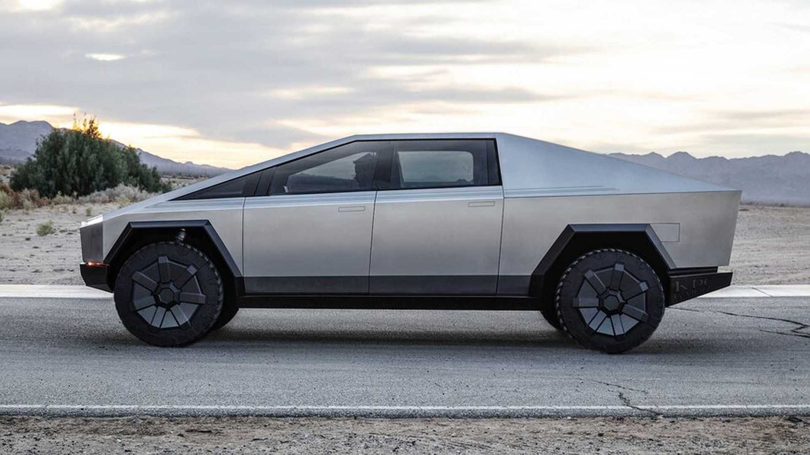
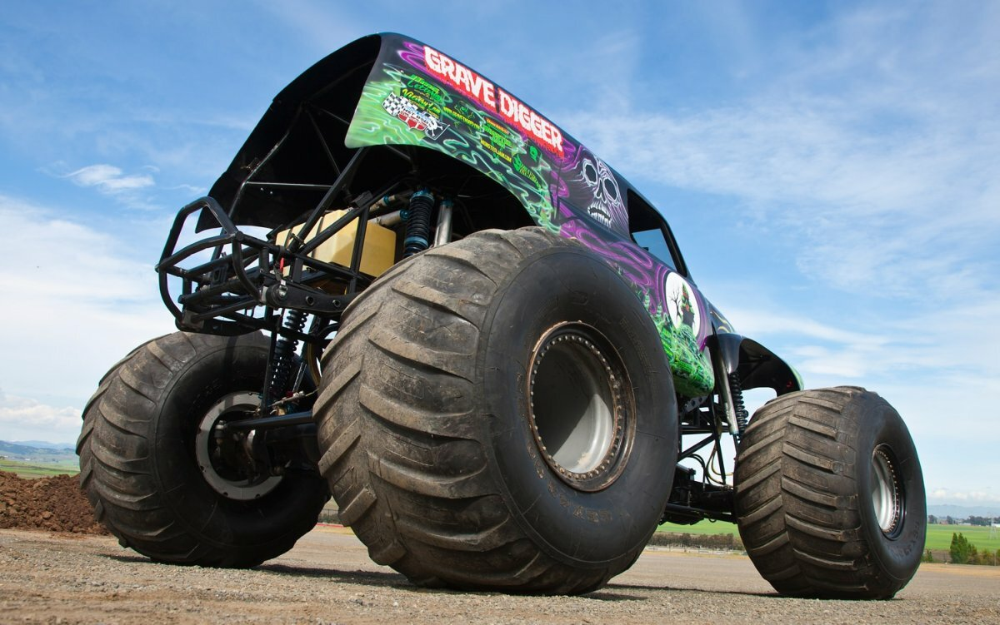

.jpg)
d
Cadillac (ˈkædɨlæk) — американский производитель автомобилей класса «люкс», принадлежащий General Motors. Автомобили «Кадиллак» продаются более чем в 50 странах и территориях, преимущественно в Северной Америке. «Кадиллак» был основан в 1903 году, его основатель, Генри Лиланд, главный механик и предприниматель, назвал компанию в честь основателя Детройта — Антуана де Ламот-Кадильяка.

Tesla Cybertruck — электромобиль-пикап в стиле киберпанк[1] (индустриальная эстетика), который планирует выпускать компания Tesla[2]. Заявленная грузоподъемность — порядка 1,6 т. В зависимости от модели на одном заряде пикап должен проезжать от 400 до 800 км[3].
По словам Илона Маска, все современные пикапы похожи друг на друга. Поэтому одной из целей проекта Cybertruck было создание абсолютно оригинального электромобиля. Предположительная стоимость заднеприводной модели в базовой комплектации составит $39 900, а полноприводной модели — от $49 900.

Monster Truck — автомобиль, чаще всего пикап, но бывают и с закрытом кузовом, измененный или специально построенный с очень большими колесами, подвеской с большим ходом и очень мощным двигателем. Такие автомобили создаются для участия в специальных соревнованиях — «Monster jam»-ах, включающих гонки по бездорожью, автотриал, прыжки через препятствия (обычно их сооружают из кузовов старых автомобилей) и различные акробатические номера. Не следует путать монстр-трак с колёсным снегоболотоходом, который, несмотря на внешнее сходство, является утилитарным транспортным средством для эксплуатации в условиях тяжёлого бездорожья.